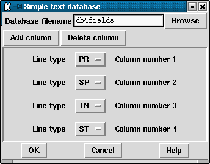

This option allows interrogation of a very simple format text database with one line per sequence. The sequence identifier is the first word of a line with one or more additional columns of information relating to specific information about that sequence. All columns in the database file must have the same format and only one database file may be used at any one time.
For example, we may wish to store the primer type, primer site, template name
and the number of strands on the template for each sequence. This corresponds
to the PR, SP, TN and ST Experiment File line
types. We could then create a text database looking something like the
following:
# ID PR SP TN ST xb54a3.s1 1 41 xb54a3 1 xb54b12.s1 1 41 xb54b12 2 xb54b12.r1 2 -24 xb54b12 2 xb54b12.r1L 2 -24 xb54b12 2
(The first line, starting with # is just a comment. Pregap4 does not
use this; it is purely so that we know which information is in which column.)
We can then direct pregap4 to extract the information from each of these four columns for each reading being processed and to store this information in the Experiment File. This information can then be utilised by the vector clipping and assembly modules.

The Simple Text Database interface consists of an entry box to specify the database file name, add and delete buttons, and a line type selector for each column in the database (excluding the reading name column). The above picture contains the database setup for extracting the primer type, primer position, template name and number of strands as described in the above example.
The "Add column" button adds a new line type selector at the bottom of the window. This contains an option menu which can be clicked to choose a new Experiment File line type and a label indicating the column number. The "Delete column" button removes the bottom-most line type selector.
The "Ok" button will accept this configuration and will also write the details to the current pregap4 configuration file. To disable a previously setup Simple Database Configuration press delete until there are no line types listed and then press Ok once more.
The simple text database does not need to include a record for every reading and special characters can be used to encode names so that readings produced in similar ways can be grouped. For example, if the first 6 letters of the name encode a "plate" name, and all the sequences on that plate have been sequenced using the same vector then we could create a database file as follows.
# ID SF SC SP 6abz91* m13mp18.seq 6249 41/-24 6aca68* puc18.seq 248 40/-28 6aca69* puc18.seq 248 40/-28 6aca70* puc18.seq 248 40/-28 6acb21* m13mp18.seq 6249 41/-24 6acd49* puc18.seq 248 40/-28 6acd51* puc18.seq 248 40/-28
The sequence identifier (ID) is searched for using a pattern matching rule (as
dictated by the Tcl string match command). The pattern matching uses
special characters as follows:
*
?
[chars]
rstuv).
\x
*?[]\ in the reading identifier.